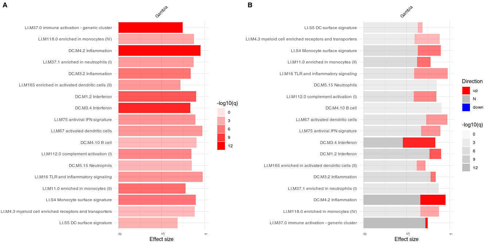
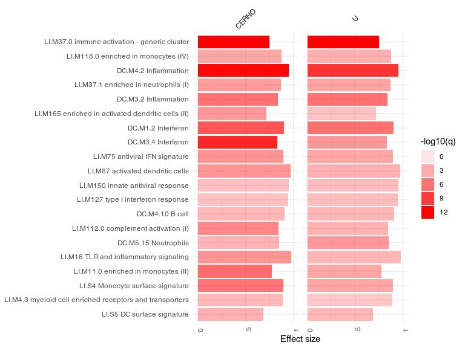
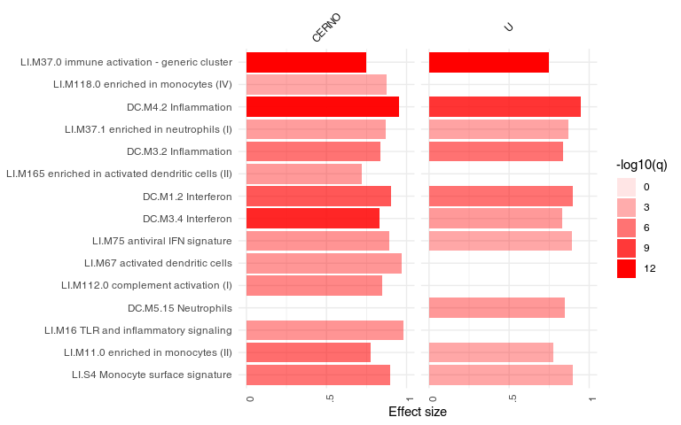
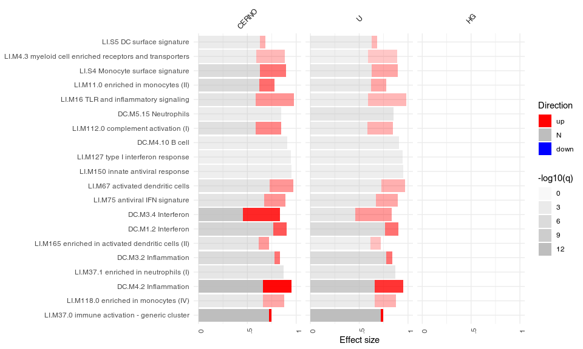
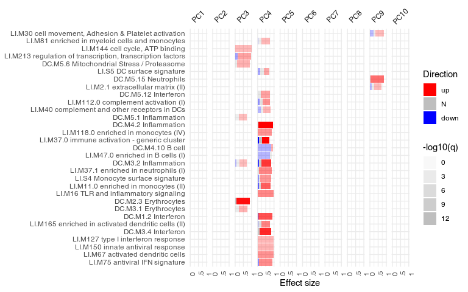

tmod: Analysis of Gene Set Enrichments
January Weiner
2022-09-26
tmod.RmdAbstract
The package includes several tools for testing the significance of enrichment of modules or other gene sets as well as visualisation of the features (genes, metabolites etc.) and gene sets, feature sets or transcriptional modules. Furthermore, the package provides blood transcriptional modules described by Chaussabel et al. (2008) and by Li et al. (2014) as well as metabolic profiling clusters from Weiner et al. (2012). This user guide is a tutorial and main documentation for the package.
Before you start
A more comprehensive user manual for tmod is found on github. This document is a shortened version of the manual, adapted to ship as a vignette with the package. Therefore, if you are not offline, I strongly suggest to use the online version.
Quick start guide
First, obtain an ordered list of genes. For example, list of genes ordered by q-values (FDR):
library(tmod)
data(EgambiaResults)
tt <- EgambiaResults
tt <- tt[ order(tt$adj.P.Val), ]
l <- tt$GENE_SYMBOLRun the CERNO test:
res <- tmodCERNOtest(l)
head(res)## ID Title cerno N1 AUC
## LI.M37.0 LI.M37.0 immune activation - generic cluster 426.3578 100 0.7462103
## DC.M4.2 DC.M4.2 Inflammation 151.1520 20 0.9503953
## DC.M3.4 DC.M3.4 Interferon 129.4727 17 0.8315780
## DC.M1.2 DC.M1.2 Interferon 112.7056 17 0.9004196
## DC.M7.29 DC.M7.29 Undetermined 118.6759 20 0.8087599
## LI.M11.0 LI.M11.0 enriched in monocytes (II) 113.8086 20 0.7766542
## cES P.Value adj.P.Val
## LI.M37.0 2.131789 1.824844e-18 1.105856e-15
## DC.M4.2 3.778799 8.040039e-15 2.436132e-12
## DC.M3.4 3.808019 4.609405e-13 9.310998e-11
## DC.M1.2 3.314869 2.298170e-10 3.481728e-08
## DC.M7.29 2.966897 1.002268e-09 1.214749e-07
## LI.M11.0 2.845216 5.255069e-09 5.307620e-07Visualize the results:
ggPanelplot(res)Inspect individual gene sets using evidence plots:
ggEvidencePlot(l, "LI.M37.0", gene.labels=FALSE)
ggEvidencePlot(l, "DC.M4.2")
ggEvidencePlot(l, "DC.M3.4")
ggEvidencePlot(l, "DC.M1.2")Find out which genes are in DC.M1.2:
getModuleMembers("DC.M1.2")## $DC.M1.2
## [1] "LY6E" "IFIT1" "OAS1" "IFIT3" "OAS3" "OASL"
## [7] "LOC129607" "ISG15" "HERC5" "MX1" "BATF2" "LAMP3"
## [13] "IFI44L" "XAF1" "IFI44" "OAS2" "TRIM6" "HES4"
## [19] "OTOF" "FLJ20035" "IFITM3" "CXCL10" "EPSTI1" "SERPING1"
## [25] "LOC26010" "RSAD2" "RTP4"Introduction
Gene set enrichment (GSE) analysis is an increasingly important tool in the biological interpretation of high throughput data, versatile and powerful. In general, there are three generations of GSE algorithms and packages.
First generation approaches test for enrichment in defined sets of differentially expressed genes (often called “foreground”) against the set of all genes (“background”). The statistical test involved is usually a hypergeometric or Fisher’s exact test. The main problem with this kind of approach is that it relies on arbitrary thresholds (like p-value or log fold change cut-offs), and the number of genes that go into the “foreground” set depends on the statistical power involved. Comparison between the same experimental condition will thus yield vastly different results depending on the number of samples used in the experiment.
The second generation of GSE involve tests which do not rely on such arbitrary definitions of what is differentially expressed, and what not, and instead directly or indirectly employ the information about the statistical distribution of individual genes. A popular implementation of this type of GSE analysis is the eponymous GSEA program (Subramanian et al. 2005). While popular and quite powerful for a range of applications, this software has important limitations due to its reliance on bootstrapping to obtain an exact p-value. For one thing, the performance of GSEA dramatically decreases for small sample numbers (Weiner 3rd and Domaszewska 2016). Moreover, the specifics of the approach prevent it from being used in applications where a direct test for differential expression is either not present (for example, in multivariate functional analysis, see Section “Functional multivariate analysis”).
The tmod package (Zyla et al. 2019) and the included CERNO1 test belong to the second generation of algorithms. However, unlike the program GSEA, the CERNO relies exclusively on an ordered list of genes, and the test statistic has a χ² distribution. Thus, it is suitable for any application in which an ordered list of genes is generated: for example, it is possible to apply tmod to weights of PCA components or to variable importance measure of a machine learning model.
tmod was created with the following properties in mind: (i) test for enrichment which relies on a list of sorted genes, (ii) with an analytical solution, (iii) flexible, allowing custom gene sets and analyses, (iv) with visualizations of multiple analysis results, suitable for time series and suchlike, (v) including transcriptional module definitions not present in other databases and, finally, (vi) to be suitable for use in R.
Dive into tmod: analysis of transcriptomic responses to tuberculosis
Introduction
In this chapter, I will use an example data set included in tmod to show the application of tmod to the analysis of differential gene expression. The data set has been generated by Maertzdorf et al. (2011) and has the GEO ID GSE28623. Is based on whole blood RNA microarrays from tuberculosis (TB) patients and healthy controls.
Although microarrays were used to generate the data, the principle is the same as in RNASeq.
The Gambia data set
In the following, we will use the Egambia data set included in the package. The data is already background corrected and normalized, so we can proceed with a differential gene expression analysis. Note that only a bit over 5000 genes from the original set of over 45000 probes is included.
The results for this data set have been obtained using the limma package as follows:
library(limma)
design <- cbind(Intercept=rep(1, 30), TB=rep(c(0,1), each= 15))
fit <- eBayes(lmFit(E, design))
tt <- topTable(fit, coef=2, number=Inf,
genelist=Egambia[,1:3])However, they are also included in the tmod package:
data(EgambiaResults)
tt <- EgambiaResultsThe table below shows first couple of results from the table tt.
| GENE_SYMBOL | GENE_NAME | logFC | adj.P.Val |
|---|---|---|---|
| FAM20A | family with sequence similarity 20, member A" | 2.956 | 0.001899 |
| FCGR1B | Fc fragment of IgG, high affinity Ib, receptor (CD64)" | 2.391 | 0.002095 |
| BATF2 | basic leucine zipper transcription factor, ATF-like 2 | 2.681 | 0.002216 |
| ANKRD22 | ankyrin repeat domain 22 | 2.764 | 0.002692 |
| SEPT4 | septin 4 | 3.287 | 0.002692 |
| CD274 | CD274 molecule | 2.377 | 0.002692 |
OK, we see some of the genes known to be prominent in the human host response to TB. We can display one of these using tmod’s showGene function (it’s just a boxplot combined with a beeswarm, nothing special):
group <- rep( c("CTRL", "TB"), each=15)
showGene(E["20799",], group,
main=Egambia["20799", "GENE_SYMBOL"])Fine, but what about the gene sets?
Transcriptional module analysis with GSE
There are two main functions in tmod to understand which modules or gene sets are significantly enriched. There are several statistical tests which can be used from within tmod (see chapter “Statistical tests in tmod” below), but here we will use the CERNO test, which is the main reason this package exist. CERNO is particularly fast and robust second generation approach, recommended for most applications.
CERNO works with an ordered list of genes (only ranks matter, no other statistic is necessary); the idea is to test, for each gene set, whether the genes in this gene set are more likely than others to be at the beginning of that list. The CERNO statistic has a \(\chi^2\) distribution and therefore no randomization is necessary, making the test really fast.
l <- tt$GENE_SYMBOL
resC <- tmodCERNOtest(l)
head(resC, 15)## ID Title cerno N1 AUC
## LI.M37.0 LI.M37.0 immune activation - generic cluster 426.4 100 0.746
## DC.M4.2 DC.M4.2 Inflammation 151.2 20 0.950
## DC.M3.4 DC.M3.4 Interferon 129.5 17 0.832
## DC.M1.2 DC.M1.2 Interferon 112.7 17 0.900
## DC.M7.29 DC.M7.29 Undetermined 118.7 20 0.809
## LI.M11.0 LI.M11.0 enriched in monocytes (II) 113.8 20 0.777
## DC.M3.2 DC.M3.2 Inflammation 124.0 24 0.836
## LI.S4 LI.S4 Monocyte surface signature 76.4 10 0.897
## LI.M112.0 LI.M112.0 complement activation (I) 73.7 11 0.846
## DC.M7.35 DC.M7.35 Undetermined 82.4 14 0.803
## DC.M7.16 DC.M7.16 Undetermined 66.2 10 0.822
## LI.M75 LI.M75 antiviral IFN signature 65.3 10 0.893
## LI.M16 LI.M16 TLR and inflammatory signaling 46.3 5 0.979
## LI.M67 LI.M67 activated dendritic cells 49.5 6 0.971
## LI.M165 LI.M165 enriched in activated dendritic cells (II) 91.7 19 0.720
## cES P.Value adj.P.Val
## LI.M37.0 2.13 1.82e-18 1.11e-15
## DC.M4.2 3.78 8.04e-15 2.44e-12
## DC.M3.4 3.81 4.61e-13 9.31e-11
## DC.M1.2 3.31 2.30e-10 3.48e-08
## DC.M7.29 2.97 1.00e-09 1.21e-07
## LI.M11.0 2.85 5.26e-09 5.31e-07
## DC.M3.2 2.58 1.21e-08 1.05e-06
## LI.S4 3.82 1.61e-08 1.22e-06
## LI.M112.0 3.35 1.72e-07 1.16e-05
## DC.M7.35 2.94 2.93e-07 1.77e-05
## DC.M7.16 3.31 7.38e-07 4.06e-05
## LI.M75 3.26 1.05e-06 5.28e-05
## LI.M16 4.63 1.25e-06 5.81e-05
## LI.M67 4.13 1.69e-06 7.32e-05
## LI.M165 2.41 2.44e-06 9.86e-05Only first 15 results are shown above.
Columns in the above table contain the following:
- ID The module ID. IDs starting with “LI” come from Li et al. (Li et al. 2014), while IDs starting with “DC” have been defined by Chaussabel et al. (Chaussabel et al. 2008).
- Title The module description
- cerno The CERNO statistic
- N1 Number of genes in the module
- AUC The area under curve – main size estimate
- cES CERNO statistic divided by \(2\times N1\)
- P.Value P-value from the hypergeometric test
- adj.P.Val P-value adjusted for multiple testing using the Benjamini-Hochberg correction
These results make a lot of sense: the transcriptional modules found to be enriched in a comparison of TB patients with healthy individuals are in line with the published findings. In especially, we see the interferon response, complement system as well as T-cell related modules.
Visualizing results
The main working horse for visualizing the results in tmod is the function ggPanelplot. This is really a glorified heatmap which shows both the effect size (size of the blob on the figure below) and the p-value (intensity of the color). Each column corresponds to a different comparison. Here, there will be only one column for the only comparison we made, however we need to wrap it in a list object. However, we can also use a slightly different representation to also show how many significantly up- and down-regulated2 genes are found in the enriched modules (right panel on the figure below).
Note: below I use the plot_grid function from the cowplot package to put the figures side by side.
library(cowplot)
g1 <- ggPanelplot(list(Gambia=resC))
## calculate the number of significant genes
## per module
sgenes <- tmodDecideTests(g=tt$GENE_SYMBOL,
lfc=tt$logFC,
pval=tt$adj.P.Val)
names(sgenes) <- "Gambia"
g2 <- ggPanelplot(list(Gambia=resC), sgenes = sgenes)
plot_grid(g1, g2, labels=c("A", "B"))
On the right hand side, the red color on the bars indicates that all signficantly regulated in the enriched modules. The size of the bar corresponds to the AUC, and intensity of the color corresponds to the p-value. See chapter “Visualisation and presentation of results in tmod” for more information on this and other functions.
Statistical tests in tmod
Introduction
There is a substantial numer of different gene set enrichment tests. Several are implemented in tmod (see Table below for a summary). This chapter gives an overview of the possibilities for gene set enrichment analysis with tmod.
| Test | Description | Input type |
|---|---|---|
| tmodHGtest | First generation test | Two sets, foreground and background |
| tmodUtest | Wilcoxon U test | Ordered gene list |
| tmodCERNOtest | CERNO test | Ordered gene list |
| tmodZtest | variant of the CERNO test | Ordered gene list |
| tmodPLAGEtest | eigengene-based | Expression matrix |
| tmodAUC | general permutation based testing | Matrix of ranks |
| tmodGeneSetTest | permutation based on a particular statistic | A statistic (e.g. logFC) |
In the following, I will briefly describe the various tests and show examples of usage on the Gambia data set.
First generation tests
First generation tests were based on an overrepresentation analysis (ORA). In essence, they rely on splitting the genes into two groups: the genes of interest (foreground), such as genes that we consider to be significantly regulated in an experimental condition, and all the rest (background). For a given gene set, this results in a \(2\times 2\) contingency table. If these two factors are independent (i.e., the probability of a gene belonging to a gene set is independent of the probability of a gene being regulated in the experimental condition), then we can easily derive expected frequencies for each cell of the table. Several statistical tests exist to test whether the expected frequencies differ significantly from the observed frequencies.
In tmod, the function tmodHGtest(), performs a hypergeometric test on two groups of genes: ‘foreground’ (fg), or the list of differentially expressed genes, and ‘background’ (bg) – the gene universe, i.e., all genes present in the analysis. The gene identifiers used currently by tmod are HGNC identifiers, and we will use the GENE_SYMBOL field from the Egambia data set.
In this particular example, however, we have almost no genes which are significantly differentially expressed after correction for multiple testing: the power of the test with 10 individuals in each group is too low. For the sake of the example, we will therefore relax our selection. Normally, I’d use a q-value threshold of at least 0.001.
fg <- tt$GENE_SYMBOL[tt$adj.P.Val < 0.05 & abs( tt$logFC ) > 1]
resHG <- tmodHGtest(fg=fg, bg=tt$GENE_SYMBOL)
options(width=60)
resHG## ID
## DC.M3.4 DC.M3.4
## DC.M4.2 DC.M4.2
## DC.M5.12 DC.M5.12
## LI.M112.0 LI.M112.0
## LI.M11.0 LI.M11.0
## DC.M7.29 DC.M7.29
## LI.M75 LI.M75
## LI.S4 LI.S4
## DC.M7.35 DC.M7.35
## LI.S5 LI.S5
## DC.M1.2 DC.M1.2
## LI.M165 LI.M165
## LI.M4.3 LI.M4.3
## LI.M16 LI.M16
## Title
## DC.M3.4 Interferon
## DC.M4.2 Inflammation
## DC.M5.12 Interferon
## LI.M112.0 complement activation (I)
## LI.M11.0 enriched in monocytes (II)
## DC.M7.29 Undetermined
## LI.M75 antiviral IFN signature
## LI.S4 Monocyte surface signature
## DC.M7.35 Undetermined
## LI.S5 DC surface signature
## DC.M1.2 Interferon
## LI.M165 enriched in activated dendritic cells (II)
## LI.M4.3 myeloid cell enriched receptors and transporters
## LI.M16 TLR and inflammatory signaling
## b B n N E P.Value adj.P.Val
## DC.M3.4 7 17 47 4826 42.3 9.44e-11 5.72e-08
## DC.M4.2 6 20 47 4826 30.8 2.15e-08 6.51e-06
## DC.M5.12 4 7 47 4826 58.7 2.71e-07 5.47e-05
## LI.M112.0 4 11 47 4826 37.3 2.48e-06 3.76e-04
## LI.M11.0 4 20 47 4826 20.5 3.41e-05 3.45e-03
## DC.M7.29 4 20 47 4826 20.5 3.41e-05 3.45e-03
## LI.M75 3 10 47 4826 30.8 9.91e-05 7.50e-03
## LI.S4 3 10 47 4826 30.8 9.91e-05 7.50e-03
## DC.M7.35 3 14 47 4826 22.0 2.92e-04 1.79e-02
## LI.S5 4 34 47 4826 12.1 2.96e-04 1.79e-02
## DC.M1.2 3 17 47 4826 18.1 5.35e-04 2.95e-02
## LI.M165 3 19 47 4826 16.2 7.52e-04 3.80e-02
## LI.M4.3 2 5 47 4826 41.1 9.11e-04 3.94e-02
## LI.M16 2 5 47 4826 41.1 9.11e-04 3.94e-02The columns in the above table contain the following:
- ID The module ID. IDs starting with “LI” come from Li et al. (Li et al. 2014), while IDs starting with “DC” have been defined by Chaussabel et al. (Chaussabel et al. 2008).
- Title The module description
- b Number of genes from the given module in the fg set
- B Number of genes from the module in the bg set
- n Size of the fg set
- N Size of the bg set
- E Enrichment, calcualted as (b/n)/(B/N)
- P.Value P-value from the hypergeometric test
- adj.P.Val P-value adjusted for multiple testing using the Benjamini-Hochberg correction
Well, IFN signature in TB is well known. However, the numbers of genes are not high: n is the size of the foreground, and b the number of genes in fg that belong to the given module. N and B are the respective totals – size of bg+fg and number of genes that belong to the module that are found in this totality of the analysed genes. If we were using the full Gambia data set (with all its genes), we would have a different situation.
Lack of significant genes is the main problem of ORA: splitting the genes into foreground and background relies on an arbitrary threshold which will yield very different results for different sample sizes.
Second generation tests
U-test (tmodUtest)
Another approach is to sort all the genes (for example, by the respective p-value) and perform a U-test on the ranks of (i) genes belonging to the module and (ii) genes that do not belong to the module. This is a bit slower, but often works even in the case if the power of the statistical test for differential expression is low. That is, even if only a few genes or none at all are significant at acceptable thresholds, sorting them by the p-value or another similar metric can nonetheless allow to get meaningful enrichments3.
Moreover, we do not need to set arbitrary thresholds, like p-value or logFC cutoff.
The main issue with the U-test is that it detects enrichments as well as depletions – that is, modules which are enriched at the bottom of the list (e.g. modules which are never, ever regulated in a particular comparison) will be detected as well. This is often undesirable. Secondly, large modules will be reported as significant even if the actual effect size (i.e., AUC) is modest or very small, just because of the sheer number of genes in a module. Unfortunately, also the reverse is true: modules with a small number of genes, even if they consist of highly up- or down-regulated genes from the top of the list will not be detected.
## ID Title
## LI.M37.0 LI.M37.0 immune activation - generic cluster
## DC.M4.2 DC.M4.2 Inflammation
## DC.M1.2 DC.M1.2 Interferon
## DC.M3.2 DC.M3.2 Inflammation
## DC.M5.15 DC.M5.15 Neutrophils
## DC.M7.29 DC.M7.29 Undetermined
## U N1 AUC P.Value adj.P.Val
## LI.M37.0 352659 100 0.746 1.60e-17 9.68e-15
## DC.M4.2 91352 20 0.950 1.67e-12 5.07e-10
## DC.M1.2 73612 17 0.900 5.70e-09 9.62e-07
## DC.M3.2 96366 24 0.836 6.35e-09 9.62e-07
## DC.M5.15 65289 16 0.848 7.24e-07 8.77e-05
## DC.M7.29 77738 20 0.809 9.08e-07 9.18e-05
nrow(resU)## [1] 39This list makes a lot of sense, and also is more stable than the other one: it does not depend on modules that contain just a few genes. Since the statistics is different, the b, B, n, N and E columns in the output have been replaced by the following:
- U The Mann-Whitney U statistics
- N1 Number of genes in the module
- AUC Area under curve – a measure of the effect size
A U-test has been also implemented in limma in the wilcoxGST() function.
CERNO test (tmodCERNOtest and tmodZtest)
There are two tests in tmod which both operate on an ordered list of genes: tmodUtest and tmodCERNOtest. The U test is simple, however has two main issues. Firstly, The CERNO test, described by Yamaguchi et al. (2008), is based on Fisher’s method of combining probabilities. In summary, for a given module, the scaled ranks of genes from the module are treated as probabilities. These are then logarithmized, summed and multiplied by -2:
\[f_{CERNO}=-2 \cdot \sum_{i = 1}^{N} \ln{\frac{R_i}{N_{tot}}}\]
This statitic has the \(\chi^2\) distribution with \(2\cdot N\) degrees of freedom, where \(N\) is the number of genes in a given module and \(N_{tot}\) is the total number of genes (Yamaguchi et al. 2008).
The CERNO test is actually much more practical than other tests for most purposes and is the recommended approach. A variant called tmodZtest exists in which the p-values are combined using Stouffer’s method rather than the Fisher’s method.
l <- tt$GENE_SYMBOL
resCERNO <- tmodCERNOtest(l)
head(resCERNO)## ID Title cerno
## LI.M37.0 LI.M37.0 immune activation - generic cluster 426
## DC.M4.2 DC.M4.2 Inflammation 151
## DC.M3.4 DC.M3.4 Interferon 129
## DC.M1.2 DC.M1.2 Interferon 113
## DC.M7.29 DC.M7.29 Undetermined 119
## LI.M11.0 LI.M11.0 enriched in monocytes (II) 114
## N1 AUC cES P.Value adj.P.Val
## LI.M37.0 100 0.746 2.13 1.82e-18 1.11e-15
## DC.M4.2 20 0.950 3.78 8.04e-15 2.44e-12
## DC.M3.4 17 0.832 3.81 4.61e-13 9.31e-11
## DC.M1.2 17 0.900 3.31 2.30e-10 3.48e-08
## DC.M7.29 20 0.809 2.97 1.00e-09 1.21e-07
## LI.M11.0 20 0.777 2.85 5.26e-09 5.31e-07
nrow(resCERNO)## [1] 38PLAGE
PLAGE (Tomfohr, Lu, and Kepler 2005) is a gene set enrichment method based on singular value decomposition (SVD). The idea is that instead of running a statistical test (such as a t-test) on each gene separately, information present in the gene expression of all genes in a gene set is first extracted using SVD, and the resulting vector (one per gene set) is treated as a “pseudo gene” and analysed using the approppriate statistical tool.
In the tmod implementation, for each module a gene expression matrix subset is generated and decomposed using PCA using the eigengene() function. The first component is returned and a t-test comparing two groups is then performed. This limits the implementation to only two groups, but extending it for more than one group is trivial.
tmodPLAGEtest(Egambia$GENE_SYMBOL, Egambia[,-c(1:3)], group=group)## Converting group to factor## Calculating eigengenes...## ID
## LI.S4 LI.S4
## LI.M11.0 LI.M11.0
## DC.M9.29 DC.M9.29
## DC.M5.12 DC.M5.12
## DC.M7.29 DC.M7.29
## DC.M3.4 DC.M3.4
## LI.M16 LI.M16
## DC.M4.2 DC.M4.2
## DC.M7.16 DC.M7.16
## LI.M67 LI.M67
## LI.M37.0 LI.M37.0
## LI.M4.3 LI.M4.3
## LI.M118.0 LI.M118.0
## LI.M37.1 LI.M37.1
## LI.M112.0 LI.M112.0
## LI.M105 LI.M105
## DC.M3.2 DC.M3.2
## LI.M75 LI.M75
## LI.M35.0 LI.M35.0
## LI.M121 LI.M121
## LI.M165 LI.M165
## DC.M4.10 DC.M4.10
## LI.M81 LI.M81
## Title
## LI.S4 Monocyte surface signature
## LI.M11.0 enriched in monocytes (II)
## DC.M9.29 Undetermined
## DC.M5.12 Interferon
## DC.M7.29 Undetermined
## DC.M3.4 Interferon
## LI.M16 TLR and inflammatory signaling
## DC.M4.2 Inflammation
## DC.M7.16 Undetermined
## LI.M67 activated dendritic cells
## LI.M37.0 immune activation - generic cluster
## LI.M4.3 myeloid cell enriched receptors and transporters
## LI.M118.0 enriched in monocytes (IV)
## LI.M37.1 enriched in neutrophils (I)
## LI.M112.0 complement activation (I)
## LI.M105 TBA
## DC.M3.2 Inflammation
## LI.M75 antiviral IFN signature
## LI.M35.0 signaling in T cells (I)
## LI.M121 TBA
## LI.M165 enriched in activated dendritic cells (II)
## DC.M4.10 B cell
## LI.M81 enriched in myeloid cells and monocytes
## t D AbsD P.Value adj.P.Val
## LI.S4 -7.17 -2.62 2.62 9.96e-08 5.36e-05
## LI.M11.0 -6.45 -2.35 2.35 5.51e-07 1.18e-04
## DC.M9.29 -6.54 -2.39 2.39 6.57e-07 1.18e-04
## DC.M5.12 -5.97 -2.18 2.18 2.10e-06 2.83e-04
## DC.M7.29 -5.99 -2.19 2.19 2.92e-06 3.14e-04
## DC.M3.4 -5.70 -2.08 2.08 4.21e-06 3.78e-04
## LI.M16 -5.34 -1.95 1.95 1.09e-05 8.41e-04
## DC.M4.2 -5.22 -1.91 1.91 1.54e-05 1.03e-03
## DC.M7.16 -5.11 -1.87 1.87 2.18e-05 1.31e-03
## LI.M67 -4.69 -1.71 1.71 6.59e-05 3.37e-03
## LI.M37.0 -4.73 -1.73 1.73 6.89e-05 3.37e-03
## LI.M4.3 -4.63 -1.69 1.69 9.74e-05 3.87e-03
## LI.M118.0 -4.62 -1.69 1.69 9.75e-05 3.87e-03
## LI.M37.1 -4.53 -1.66 1.66 1.01e-04 3.87e-03
## LI.M112.0 -4.36 -1.59 1.59 1.75e-04 6.29e-03
## LI.M105 -4.10 -1.50 1.50 3.28e-04 1.10e-02
## DC.M3.2 -3.93 -1.44 1.44 5.15e-04 1.63e-02
## LI.M75 -3.91 -1.43 1.43 5.63e-04 1.68e-02
## LI.M35.0 -3.81 -1.39 1.39 7.35e-04 2.00e-02
## LI.M121 -3.79 -1.39 1.39 7.50e-04 2.00e-02
## LI.M165 -3.77 -1.38 1.38 7.80e-04 2.00e-02
## DC.M4.10 3.78 1.38 1.38 8.60e-04 2.10e-02
## LI.M81 -3.80 -1.39 1.39 9.29e-04 2.17e-02Visualisation and presentation of results in tmod
Introduction
By default, results produced by tmod are data frames containing one row per tested gene set / module. In certain circumstances, when multiple tests are performed, the returned object is a list in which each element is a results table. In other situations a list can be created manually. In any case, it is often necessary to extract, compare or summarize one or more result tables.
Visualizing gene sets with eigengene
One of the most frequent demands is to somehow show differences in transcription in the gene sets between groups. This is usually quite bothersome. One possibility is to use a heatmap, another to show how all genes vary between the groups. Both these options result in messy, frequently biased pictures (for example, if only the “best” genes are selected for a heatmap).
The code below shows how to select genes from a module with the getModuleMembers() function. For this, we will use the Gambia data set and the LI.M75 interferon module.
m <- "LI.M75"
## getModuleMembers returns a list – you can choose to
## select multiple modules
genes <- getModuleMembers(m)[[1]]
sel <- Egambia$GENE_SYMBOL %in% genes
x <- data.matrix(Egambia)[sel, -c(1:3)] # expression matrixMatix x contains expression of all genes from the selected module (one row per gene, one column per sample).
Then, heatmaps and line plots can be generated. Note that both of the approaches below are discouraged. Firstly, these representations are chaotic and hard to read. Secondly, it is easy to manipulate such plots in order to make the effects more prominent than they really are. Thirdly, they use up a lot of space and ink to convey very little useful and interpretable information, which is a sin(Tufte and Graves-Morris 2014).
A better (but not perfect) approach is to use eigengenes. An eigengene is a vector of numbers which are thought to represent all genes in a gene set. It is calculated by running a principal component analysis on an expression matrix of the genes of interest. This vector can be thought of as an “average” or “representative” gene of a gene set.
Below, we calculate all eigengenes from modules in tmod and display two of them. The object eig will contain one row per module and one column per sample.
par(mfrow=c(1,2))
eig <- eigengene(Egambia[,-c(1:3)], Egambia$GENE_SYMBOL)
showGene(eig["LI.M75", ], group,
ylab="Eigengene",
main="antiviral Interferon signature")
showGene(eig["LI.M16", ], group,
ylab="Eigengene",
main="TLR and inflammatory signaling")In fact, one can compare the eigengenes using a t.test or another statistical procedure – this is the essence of the PLAGE algorithm, described earlier.
Showing enrichment with evidence plots
Let us first investigate in more detail the module LI.M75, the antiviral interferon signature. We can use the ggEvidencePlot function to see how the module is enriched in the list l.
l <- tt$GENE_SYMBOL
theme_set(theme_minimal())
ggEvidencePlot(l, "LI.M75") 
In essence, this is a receiver-operator characteristic (ROC) curve, and the area under the curve (AUC) is related to the U-statistic, from which the P-value in the tmodUtest is calculated, as \(\text{AUC}=\frac{U}{n_1\cdot n_2}\). Both the U statistic and the AUC are reported. Moreover, the AUC can be used to calculate effect size according to the Wendt’s formula(Wendt 1972) for rank-biserial correlation coefficient:
\[r=1-\frac{2\cdot U}{n_1\cdot n_2} = 1 - 2\cdot\text{AUC}\]
In the above diagram, we see that nine out of the 10 genes that belong to the LI.M75 module and which are present in the Egambia data set are ranked among the top 1000 genes (as sorted by p-value).
Evidence plots are an important tool to understand whether the obtained results are not only significant in the statistical sense, but whether they are also of biological interest. As mentioned above, the area under the evidence plot, the AUC (area under curve) is an important measure of the effect size. Effect size should always be taken into consideration when interpreting p-values.
The figure below shows three very different enrichments.
library(purrr)
sel <- c("LI.M67", "LI.M37.0")
plots <- map(sel, ~ ggEvidencePlot(l, .x, gene.labels=FALSE))
plot_grid(plotlist = plots, labels=sel)The corresponding results are shown in the following table:
| ID | Title | cerno | N1 | AUC | cES | P.Value | adj.P.Val | |
|---|---|---|---|---|---|---|---|---|
| LI.M37.0 | LI.M37.0 | immune activation - generic cluster | 426.4 | 100 | 0.746 | 2.13 | 0 | 0 |
| LI.M67 | LI.M67 | activated dendritic cells | 49.5 | 6 | 0.971 | 4.13 | 0 | 0 |
LI.M67 (activated dendritic cells) contains only 6 genes, but as most of them have really low p-values and are on the top of the p-value sorted list, the resulting effect size is close to 1.
The next panel shows a gene set containing a large number of genes. The effect size for LI.M37.0 is much smaller (0.75), but thanks to the large number of genes the enrichment is significant, with p-value lower than for LI.M67.
Very often, a gene set with a larger number of genes will have a low p-value. However, these gene sets are frequently not very specific, and the corresponding effect sizes are not large. In the above example, the LI.M67 is a much more interesting result: it is more specific and shows a much larger effect, despite having a much higher p-value.
Summary tables
We can summarize the output from the previously run tests (tmodUtest, tmodCERNOtest and tmodHGtest) in one table using tmodSummary. For this, we will create a list containing results from all comparisons.
resAll <- list(CERNO=resC, U=resU, HG=resHG)
#head(tmodSummary(resAll))The table below shows the results.
| ID | Title | AUC.CERNO | q.CERNO | AUC.U | q.U | E.HG | q.HG |
|---|---|---|---|---|---|---|---|
| DC.M1.2 | Interferon | 0.9004 | 3.482e-08 | 0.9004 | 9.624e-07 | 18.12 | 0.02948 |
| DC.M3.2 | Inflammation | 0.8362 | 1.05e-06 | 0.8362 | 9.624e-07 | NA | NA |
| DC.M3.4 | Interferon | 0.8316 | 9.311e-11 | 0.8316 | 9.865e-05 | 42.28 | 5.721e-08 |
| DC.M3.6 | Cytotoxic/NK Cell | 0.7933 | 0.03038 | 0.7933 | 0.01008 | NA | NA |
| DC.M4.10 | B cell | 0.9076 | 0.004302 | 0.9076 | 0.003376 | NA | NA |
| DC.M4.2 | Inflammation | 0.9504 | 2.436e-12 | 0.9504 | 5.075e-10 | 30.8 | 6.507e-06 |
Panel plots
A list of result tables (or even of a single result table) can be visualized using a heatmap-like plot called here “panel plot.” The idea is to show both, effect sizes and p-values, and, optionally, also the direction of gene regulation.
In the example below, we will use the resAll object created above, containing the results from three different tests for enrichment, to compare the results of the individual tests. However, since the E column of HG test is not easily comparable to the AUC values (which are between 0 and 1), we need to scale it down. Also, we need to call it “AUC,” because otherwise we can’t show the values on the same plot.
resAll$HG$AUC <- log10(resAll$HG$E) - 0.5
ggPanelplot(resAll)
Each enrichment result corresponds to a reddish bar. The size of the bar corresponds to the effect size (AUC or log10(Enrichment) - 0.5, as it may be), and color intensity corresponds to the p-value – pale colors show p-values closer to 0.01. It is easily seen how tmodCERNOtest is the more sensitive option.
We can see that also the intercept term is enriched for genes found in monocytes and neutrophils. Note that by default, ggPanelplot only shows enrichments with p < 0.01, hence a slight difference from the tmodSummary output. This behavior can be modified by the q_thr option:
ggPanelplot(resAll, q_thr=1e-3)
However, one is usually interested in the direction of regulation. If a gene list is sorted by p-value, the enriched modules may contain both up- or down-regulated genes4. It is often desirable to visualize whether genes in a module go up, or go down between experimental conditions. For this, the function tmodDecideTests is used to obtain the number of significantly up- or down-regulated genes in a module.
This information must be obtained separately from the differential gene expression analysis and provided as a list to ggPanelplot. The names of this list must be identical to the names in the results list. Below, we reuse the same object for all three tests, since the DEGs (differentially expressed genes) were the same in all three comparisons.
degs <- tmodDecideTests(g=tt$GENE_SYMBOL, lfc=tt$logFC,
pval=tt$adj.P.Val)[[1]]
degs <- list(CERNO=degs, HG=degs, U=degs)
ggPanelplot(resAll, sgenes = degs)
Each mini-plot shows the effect size of the enrichment and the corresponding p-value, as before. Additionally, the fraction of up-regulated and down-regulated genes is visualized by coloring a fraction of the area of the mini-plot red or blue, respectively5.
The ggPanelplot function has several parameters, notably for filtering and labelling:
- Filtering:
-
filter_row_qandfilter_row_aucremove gene sets for which, respectively, the FDR p-value or the effect size are not achieved in any of the comparisons; -
q_cutoff: enrichments with q-values above this cutoff are considered to be absent
-
The ggPanelplot function returns a ggplot2 graph, and therefore allows much customization.
Using tmod for other types of GSE analyses
The fact that tmod relies on a single ordered list of genes makes it useful in many other situations in which such a list presents itself.
Correlation analysis
Genes can be ordered by their absolute correlation with a variable or even a data set or a module. For example, one can ask the question about a function of a particular unknown gene – such as ANKRD22, annotated as “ankyrin repeat domain 22.”
x <- E[ match("ANKRD22", Egambia$GENE_SYMBOL), ]
cors <- t(cor(x, t(E)))
ord <- order(abs(cors), decreasing=TRUE)
head(tmodCERNOtest(Egambia$GENE_SYMBOL[ ord ]))## ID
## LI.M37.0 LI.M37.0
## DC.M3.4 DC.M3.4
## DC.M4.2 DC.M4.2
## DC.M1.2 DC.M1.2
## DC.M7.29 DC.M7.29
## LI.M165 LI.M165
## Title cerno
## LI.M37.0 immune activation - generic cluster 431
## DC.M3.4 Interferon 142
## DC.M4.2 Inflammation 151
## DC.M1.2 Interferon 132
## DC.M7.29 Undetermined 117
## LI.M165 enriched in activated dendritic cells (II) 113
## N1 AUC cES P.Value adj.P.Val
## LI.M37.0 100 0.719 2.16 4.71e-19 2.85e-16
## DC.M3.4 17 0.866 4.17 4.25e-15 1.29e-12
## DC.M4.2 20 0.913 3.79 7.25e-15 1.46e-12
## DC.M1.2 17 0.926 3.89 1.68e-13 2.54e-11
## DC.M7.29 20 0.808 2.92 1.83e-09 2.20e-07
## LI.M165 19 0.781 2.98 2.18e-09 2.20e-07Clearly, ANKRD22 correlates to other immune related genes, most of all these which are interferon inducible.
In another example, consider correlation between genes and the first principal component (“eigengene”) of a group of genes of unknown function6. To demonstrate the method, we will select the genes from the module “LI.M75.” For this, we use the function getGenes with the optional argument genes used to filter the genes in the module by the genes present in the data set.
g <- getGenes("LI.M75", genes=Egambia$GENE_SYMBOL,
as.list=TRUE)
x <- E[ match(g[[1]], Egambia$GENE_SYMBOL), ]
## calculating the "eigengene" (PC1)
pca <- prcomp(t(x), scale.=T)
eigen <- pca$x[,1]
cors <- t(cor(eigen, t(E)))
## order all genes by the correlation between the gene and the PC1
ord <- order(abs(cors), decreasing=TRUE)
head(tmodCERNOtest(Egambia$GENE_SYMBOL[ ord ]))## ID
## DC.M1.2 DC.M1.2
## DC.M3.4 DC.M3.4
## LI.M165 LI.M165
## LI.M75 LI.M75
## LI.M37.0 LI.M37.0
## DC.M4.2 DC.M4.2
## Title cerno
## DC.M1.2 Interferon 197
## DC.M3.4 Interferon 154
## LI.M165 enriched in activated dendritic cells (II) 155
## LI.M75 antiviral IFN signature 104
## LI.M37.0 immune activation - generic cluster 364
## DC.M4.2 Inflammation 128
## N1 AUC cES P.Value adj.P.Val
## DC.M1.2 17 0.964 5.80 6.77e-25 4.10e-22
## DC.M3.4 17 0.926 4.53 3.10e-17 9.40e-15
## LI.M165 19 0.825 4.07 5.46e-16 1.10e-13
## LI.M75 10 0.943 5.21 2.25e-13 3.42e-11
## LI.M37.0 100 0.668 1.82 1.12e-11 1.36e-09
## DC.M4.2 20 0.888 3.19 4.44e-11 4.49e-09Functional multivariate analysis
Transcriptional modules can help to understand the biological meaning of the calculated multivariate transformations. For example, consider a principal component analysis (PCA), visualised using the pca3d package (Weiner 2013):
mypal <- c("#E69F00", "#56B4E9")
pca <- prcomp(t(E), scale.=TRUE)
col <- mypal[ factor(group) ]
par(mfrow=c(1, 2))
l<-pcaplot(pca, group=group, col=col)
legend("topleft", as.character(l$groups),
pch=l$pch,
col=l$colors, bty="n")
l<-pcaplot(pca, group=group, col=col, components=3:4)
legend("topleft", as.character(l$groups),
pch=l$pch,
col=l$colors, bty="n")The fourth component looks really interesting. Does it correspond to the modules which we have found before? Each principal component is, after all, a linear combination of gene expression values multiplied by weights (or scores) which are constant for a given component. The i-th principal component for sample j is given by
\[PC_{i,j} = \sum_{k} w_{i,k} \cdot x_{k,j}\]
where \(k\) is the index of the variables (genes in our case), \(w_{i,k}\) is the weight associated with the \(i\)-th component and the \(k\)-th variable (gene), and \(x_{k,j}\) is the value of the variable \(k\) for the sample \(j\); that is, the gene expression of gene \(k\) in the sample \(j\). Genes influence the position of a sample along a given component the more the larger their absolute weight for that component.
For example, on the right-hand figure above, we see that samples which were taken from TB patients have a high value of the principal component 4; the opposite is true for the healthy controls. The genes that allow us to differentiate between these two groups will have very large, positive weights for genes highly expressed in TB patients, and very large, negative weights for genes which are highly expressed in NID, but not TB.
We can sort the genes by their weight in the given component, since the weights are stored in the pca object in the “rotation” slot, and use the tmodUtest function to test for enrichment of the modules.
o <- order(abs(pca$rotation[,4]), decreasing=TRUE)
l <- Egambia$GENE_SYMBOL[o]
res <- tmodUtest(l)
head(res)## ID Title
## LI.M37.0 LI.M37.0 immune activation - generic cluster
## DC.M4.2 DC.M4.2 Inflammation
## DC.M1.2 DC.M1.2 Interferon
## DC.M3.2 DC.M3.2 Inflammation
## DC.M7.29 DC.M7.29 Undetermined
## DC.M3.4 DC.M3.4 Interferon
## U N1 AUC P.Value adj.P.Val
## LI.M37.0 339742 100 0.719 3.13e-14 1.90e-11
## DC.M4.2 89378 20 0.930 1.52e-11 4.60e-09
## DC.M1.2 74828 17 0.915 1.61e-09 3.24e-07
## DC.M3.2 95685 24 0.830 1.14e-08 1.72e-06
## DC.M7.29 78752 20 0.819 3.99e-07 4.84e-05
## DC.M3.4 68058 17 0.832 1.07e-06 1.08e-04Perfect, this is what we expected: we see that the neutrophil / interferon signature which is the hallmark of the TB biosignature. What about other components? We can run the enrichment for each component and visualise the results using tmod’s functions tmodSummary and ggPanelplot. Below, we use the filter.empty option to omit the principal components which show no enrichment at all.
# Calculate enrichment for each component
gs <- Egambia$GENE_SYMBOL
# function calculating the enrichment of a PC
gn.f <- function(r) {
tmodCERNOtest(gs[order(abs(r), decreasing=T)],
qval=0.01)
}
x <- apply(pca$rotation, 2, gn.f)
tmodSummary(x, filter.empty=TRUE)[1:5,]## ID Title AUC.PC3 q.PC3 AUC.PC4
## DC.M1.1 DC.M1.1 Platelets NA NA NA
## DC.M1.2 DC.M1.2 Interferon NA NA 0.915
## DC.M2.3 DC.M2.3 Erythrocytes 0.897 6.01e-12 NA
## DC.M3.1 DC.M3.1 Erythrocytes 0.729 1.92e-03 NA
## DC.M3.2 DC.M3.2 Inflammation 0.715 8.88e-03 0.830
## q.PC4 AUC.PC9 q.PC9 AUC.PC14 q.PC14 AUC.PC30
## DC.M1.1 NA NA NA 0.746 7.94e-05 NA
## DC.M1.2 1.75e-08 NA NA NA NA 0.828
## DC.M2.3 NA NA NA NA NA 0.843
## DC.M3.1 NA NA NA NA NA NA
## DC.M3.2 7.16e-10 NA NA NA NA 0.758
## q.PC30
## DC.M1.1 NA
## DC.M1.2 6.79e-03
## DC.M2.3 3.08e-07
## DC.M3.1 NA
## DC.M3.2 1.17e-05The following plot shows the same information in a visual form. The size of the blobs corresponds to the effect size (AUC value), and their color – to the q-value.
ggPanelplot(x)
However, we might want to ask, for each module, how many of the genes in that module have a negative, and how many have a positive weight? We can use the function tmodDecideTests for that. For each principal component shown, we want to know how many genes have very large (in absolute terms) weights – we can use the “lfc” parameter of tmodDecideTests for that. We define here “large” as being in the top 25% of all weights in the given component. For this, we need first to calculate the 3rd quartile (top 25% threshold). We will show only 10 components:
qfnc <- function(r) quantile(r, 0.75)
qqs <- apply(pca$rotation[,1:10], 2, qfnc)
gloadings <- tmodDecideTests(gs, lfc=pca$rotation[,1:10], lfc.thr=qqs)
ggPanelplot(x[1:10], sgenes = gloadings) 
Using and creating modules and gene sets
Tmod was created with transcriptional modules in mind. This is why the word “module” is used throughout tmod. However, any gene or variable set – depending on application – is a “module” in tmod. These data sets can be used with most of tmod functions (including the gene set enrichment test functions) by specifying it with the option mset=, for example tmodCERNOtest(..., mset=mytmodobject).
Using built-in gene sets (transcriptional modules)
By default, tmod uses both the modules published by Li et al. (Li et al. 2014) (LI) and second set of modules published by Chaussabel et al. (Chaussabel et al. 2008) (DC). The module definitions for the DC set were described by Banchereau et al. (Banchereau et al. 2012).
Depending on the mset parameter to the test functions, either the LI or DC sets are used, or both, if the mset=all has been specified.
## ID Title
## LI.M37.0 LI.M37.0 immune activation - generic cluster
## LI.M37.1 LI.M37.1 enriched in neutrophils (I)
## LI.S4 LI.S4 Monocyte surface signature
## LI.M75 LI.M75 antiviral IFN signature
## LI.M11.0 LI.M11.0 enriched in monocytes (II)
## LI.M67 LI.M67 activated dendritic cells
## U N1 AUC P.Value adj.P.Val
## LI.M37.0 352659 100 0.746 1.60e-17 5.53e-15
## LI.M37.1 50280 12 0.870 4.53e-06 6.57e-04
## LI.S4 43220 10 0.897 6.85e-06 6.57e-04
## LI.M75 42996 10 0.893 8.63e-06 6.57e-04
## LI.M11.0 74652 20 0.777 9.49e-06 6.57e-04
## LI.M67 28095 6 0.971 3.20e-05 1.81e-03As you can see, the information contained in both module sets is partially redundant.
Accessing the tmod gene set data
The tmod package stores its data in two data frames and two lists. This object is contained in a list called tmod, which is loaded with data("tmod"). The names mimick the various environments from Annotation.dbi packages, but currently the objects are just two lists and two data frames.
-
tmod$gsis a data frame which contains general module information as defined in the supplementary materials for Li et al. (Li et al. 2014) and Chaussabel et al. (Chaussabel et al. 2008) -
tmod$gvis vector with gene identifiers; -
tmod$gs2gvcontains the mapping between gene sets and genes.
Module operations
The gene sets used by tmod are objects of class tmod. The default object used in the gene set enrichment tests in the tmod package can be loaded into the environment with the command data(tmod):
data(tmod)
tmod## An object of class "tmodGS"
## 606 gene sets, 12712 genesObjects of the class tmod can be easily generated from a number of data sources (see below). Several functions can be used on the objects:
length(tmod)## [1] 606
sel <- grep("Interferon", tmod$gs$Title, ignore.case=TRUE)
ifn <- tmod[sel]
ifn## An object of class "tmodGS"
## 6 gene sets, 161 genes
length(ifn)## [1] 6Custom module definitions
It is possible to use any kind of arbitrary or custom gene set definitions. These custom definition of gene sets takes form of a list which is then provided as the mset parameter to the test functions. The list in question must have the following members:
- gs (gene sets) A data frame which contains at least the columns “ID” and “Title.”
- gs2gv A list. Mapping between gene sets and the gene vector. Each element is an integer vector which contains the positions of the given gene in the gv vector. The names of the list correspond to the gs$ID vector.
- gv Gene vector. Character vector of genes.
The tests in the tmod package will accept a simple list that contains the above fields. However, the function makeTmodGS can be used conveniently to create a tmod object. This function requires only two parameters: gs – a data frame, as described above – and a mapping between gene sets and gene identifiers, in the parameter gs2gene.
Here is a minimal definition of such a set:
mymset <- makeTmodGS(
gs=data.frame(ID=c("A", "B"),
Title=c("A title",
"B title")),
gs2gene=list(
A=c("G1", "G2"),
B=c("G3", "G4"))
)
mymset## An object of class "tmodGS"
## 2 gene sets, 4 genesWhether the gene IDs are Entrez, or something else entirely does not matter, as long as they matched the provided input to the test functions.
Obtaining other gene sets
The tests in the tmod package can take any arbitrary module definitions. While tmod – for many reasons – cannot distribute all module sets, it can easily import gene sets from many sources. A few of these will be discussed below.
MSigDB
The MSigDB database from the Broad institute is an interesting collection of gene sets (actually, multiple collections), including Reactome pathways, gene ontologies (GO) and many other data sets. Moreover, it is the basis for the GSEA program.
The whole MSigDB is provided by the msigdbr package from BioConductor. We can then use tmod function makeTmodFromDataFrame to convert the msigdbr data frame into one large tmod object:
library(msigdbr)
msig <- msigdbr()
msig <- makeTmodFromDataFrame(df=msig,
feature_col="gene_symbol",
module_col="gs_id", title_col="gs_name",
extra_module_cols=c("gs_cat", "gs_subcat", "gs_url",
"gs_exact_source", "gs_description"))Alternatively, you can the MSigDB in XML format7. This file can be accessed at the from the pages of MSigDB at the Broad Institute http://software.broadinstitute.org/gsea/msigdb/download_file.jsp?filePath=/resources/msigdb/6.1/msigdb_v6.1.xml – follow the link, register and log in, and save the zip archive on your disk (roughly 113 MB). The ZIP file contains an XML file (called ‘msigdb_v2022.1.Hs.xml’ at the time of writing) which you can import into tmod.
Importing MSigDB from XML is easy – tmod has a function specifically for that purpose. Once you have downloaded the MSigDB file, you can create the tmod-compatible R object with one command8. However, the tmod function tmodImportMsigDB() can also use this format, look up the manual page:
msig <- tmodImportMSigDB("msigdb_v2022.1.Hs.xml")That’s it – now you can use the full MSigDB for enrichment tests:
res <- tmodCERNOtest(tt$GENE_SYMBOL, mset=msig)The results are quite typical for MSigDB, which is quite abundant with similar or overlapping gene sets. As the first results, we see, again, interferon response, as well as sets of genes which are significantly upregulated after yellow fever vaccination – and which are also interferon related. We might want to limit our analysis only to the 50 “hallmark” module categories:
sel <- msig$gs$gs_cat == "H"
tmodCERNOtest(tt$GENE_SYMBOL, mset=msig[sel] )Other particularly interesting subsets of MSigDB are shown in the table below. “Category” and “Subcategory” are columns in the msig$gs data frame.
| Subset | Description | Category | Subcategory |
|---|---|---|---|
| Hallmark | Curated set of gene sets | H | |
| GO / BP | Gene ontology, biological process | C5 | BP |
| GO / CC | Gene ontology, cellular component | C5 | CC |
| GO / MF | Gene ontology, molecular function | C5 | MF |
| Biocarta | Molecular pathways from Biocarta | C2 | CP:BIOCARTA |
| KEGG | Pathways from Kyoto Encyclopedia of Genes and Genomes | C2 | CP:KEGG |
| Reactome | Pathways from the Reactome pathway database | C2 | CP:REACTOME |
Using the ENSEMBL databases through biomaRt
ENSEMBL databases for a multitude of organisms can be accessed using the R package biomaRt.
Importantly, biomaRt allows to map different types of identifiers onto each other; this allows for example to obtain Entrez gene identifiers (required by KEGG or GO) .
Below, we will use biomaRt to obtain gene ontology (GO) terms and Reactome pathway IDs for genes in the Egambia data set, using the Entrez gene ID’s (column EG in the Egambia data set).
library(biomaRt)
mart <- useMart("ensembl", dataset = "hsapiens_gene_ensembl")
bm <- getBM(filters="hgnc_symbol",
values = Egambia$GENE_SYMBOL,
attributes = c( "hgnc_symbol", "entrezgene", "reactome", "go_id", "name_1006", "go_linkage_type"),
mart=mart)In the following code, we construct the modules data frame m and the gene set to gene mappings m2g (each twice: once for GO, and once for Reactome). We only keep the terms that have at least 10 and not more than 100 associated Entrez gene ID’s.
m2g_r <- with(bm[ bm$reactome != "", ], split(hgnc_symbol, reactome))
m2g_g <- with(bm[ bm$go_id != "", ], split(hgnc_symbol, go_id))
ll <- lengths(m2g_r)
m2g_r <- m2g_r[ ll >= 5 & ll <= 250 ]
ll <- lengths(m2g_g)
m2g_g <- m2g_g[ ll >= 5 & ll <= 250 ]
m_r <- data.frame(ID=names(m2g_r), Title=names(m2g_r))
m_g <- data.frame(ID=names(m2g_g),
Title=bm$name_1006[ match(names(m2g_g), bm$go_id)])
ensemblR <- makeTmod(modules=m_r, modules2genes=m2g_r)
ensemblGO <- makeTmod(modules=m_g, modules2genes=m2g_g)
## these objects are no longer necessary
rm(bm, m_g, m_r, m2g_r, m2g_g)Gene ontologies (GO)
GO terms are perhaps the most frequently used type of gene sets in GSE, in particular because they are available for a much larger number of organisms than other gene sets (like KEGG pathways).
There are many sources to obtain GO definitions. As described in the previous sections, GO’s can be also obtained from ENSEMBL via biomaRt and from MSigDB. In fact, MSigDB may be the easiest way.
However, GO annotations can also be obtained from AnnotationDBI Bioconductor packages as shown below. Note that the Entrez gene IDs are in the EG column of the Egambia object.
There are over 15,000 GO terms and 250,000 genes in the mtab mapping; however, many of them map to either a very small or a very large number of genes. At this stage, it could also be useful to remove any genes not present in our particular data set, but that would make the resulting tmod object less flexible. However, we may be interested only in the “biological process” ontology for now.
mtab <- mtab[ mtab$Ontology == "BP", ]
m2g <- split(mtab$gene_id, mtab$go_id)
## remove the rather large object
rm(mtab)
ll <- lengths(m2g)
m2g <- m2g[ ll >= 10 & ll <= 100 ]
length(m2g)Using the mapping and the GO.db it is easy to create a module set suitable for tmod:
library(GO.db)
gt <- toTable(GOTERM)
m <- data.frame(ID=names(m2g))
m$Title <- gt$Term[ match(m$ID, gt$go_id) ]
goset <- makeTmod(modules=m, modules2genes=m2g)
rm(gt, m2g, m)This approach allows an offline mapping to GO terms, assuming the necessary DBI is installed. Using AnnotationDBI databases such as org.Hs.eg.db has, however, also two major disadvantages: firstly, the annotations are available for a small number of organisms. Secondly, the annotations in ENSEMBL may be more up to date.
KEGG pathways
One way to obtain KEGG pathway gene sets is to use the MSigDB as described above. However, alternatively and for other organisms it is possible to directly obtain the pathway definitions from KEGG. The code below might take a lot of time on a slow connection.
library(KEGGREST)
pathways <- keggLink("pathway", "hsa")
## get pathway Names in addition to IDs
paths <- sapply(unique(pathways), function(p) keggGet(p)[[1]]$NAME)
m <- data.frame(ID=unique(pathways), Title=paths)
## m2g is the mapping from modules (pathways) to genes
m2g <- split(names(pathways), pathways)
## kegg object can now be used with tmod
kegg <- makeTmod(modules=m, modules2genes=m2g)Note that KEGG uses a slightly modified version of Entrez identifiers – each numeric identifier is preceded by a three letter species code (e.g. “hsa” for humans) followed by a colon:
eg <- paste0("hsa:", tt$EG)
tmodCERNOtest(eg, mset="kegg")Again, the most important part is to ensure that the gene identifiers in the tmod object (kegg in this case) correspond to the gene identifiers in in the ordered list.
Manual creation of tmod module objects: MSigDB
For the purposes of an example, the code below shows how to parse the XML MSigDB file using the R package XML. Essentially, this is the same code that tmodImportMsigDB is using:
There are over 30,000 “gene sets” (equivalent to modules in tmod) defined. Each member of foo2 is a named character vector:
path1 <- foo2[[1]]
class(path1)
names(path1)For our example analysis, we will use only human gene sets. We further need to make sure there are no NULLs in the list.
orgs <- sapply(foo2, function(x) x["ORGANISM"])
unique(orgs)
foo3 <- foo2[ orgs == "Homo sapiens" ]
foo3 <- foo3[ ! sapply(foo3, is.null) ]Next, construct the modules data frame. We will use four named fields for each vector, which contain the ID (systematic name), description, category and subcategory:
modules <- t(sapply(foo3,
function(x)
x[ c("SYSTEMATIC_NAME", "STANDARD_NAME", "CATEGORY_CODE", "SUBCATEGORY_CODE") ]))
colnames(modules) <- c( "ID", "Title", "Category", "Subcategory" )
modules <- data.frame(modules, stringsAsFactors=FALSE)
nrow(modules)Then, we create the mapping from gene sets to genes. For this, we use the MEMBERS_SYMBOLIZED field, which is a comma separated list of gene symbols belonging to a particular module:
m2g <- lapply(foo3,
function(x) strsplit( x["MEMBERS_SYMBOLIZED"], "," )[[1]])
names(m2g) <- modules$ID
mymsig <- makeTmod(modules=modules, modules2genes=m2g)
mymsigFrom now on, you can use the object mymsig with tmod enrichment tests.
Citing
To cite tmod, please use the following reference:
Zyla J, Marczyk M, Domaszewska T, Kaufmann SH, Polanska J, Weiner 3rd J. Gene set enrichment for reproducible science: comparison of CERNO and eight other algorithms. Bioinformatics. 2019 Dec 15;35(24):5146-54.